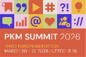
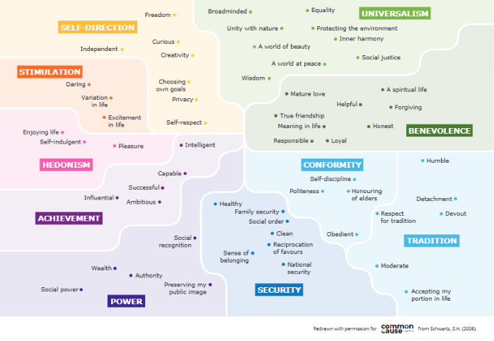
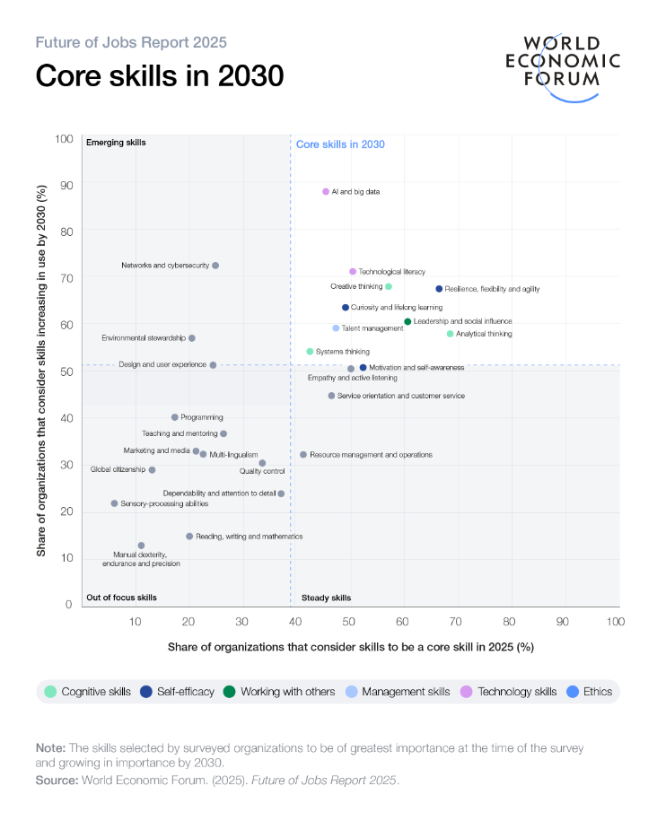
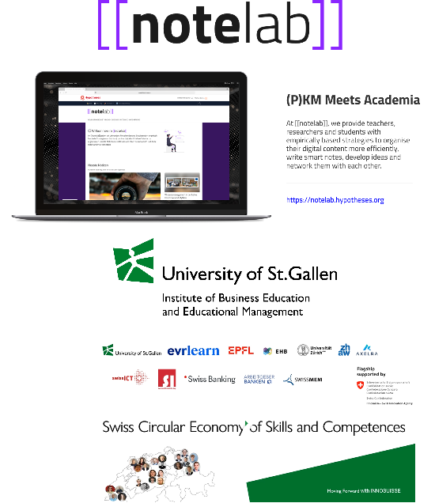

References
What you know?
Making Competences Visible
Collecting Puzzle Pieces of Evidence to Capture, Show, and Explain What You Know, Can Do, and Value

After this workshop, you will have learned:
- 🎓 Problem & Goal — why competences stay invisible and what “making competences visible” requires
- 🧠 Tools for Thought as competence management tools — how connected notes (e.g., in Obsidian) can function as a living competence portfolio
- 🧩 Four Practical Moves — capture → structure→ validate → present competences and proofs of evidence
Let’s get started!
Competence Management (through Tools for Thought)
<img src="./assets/self-reflection.png" alt="Self Reflection" class="h-64 w-auto object-contain" />
<p class="mt-3 opacity-70">Self-Reflection</p><img src="./assets/vsk.png" alt="Values Skills Knowledge" class="h-64 w-auto object-contain" />
<p class="mt-3 opacity-70">Value-Skills-Knowledge Development</p><img src="./assets/docu.png" alt="Documentation" class="h-64 w-auto object-contain" />
<p class="mt-3 opacity-70">Documentation and Presentation</p>Part 1: Values
What are values?
- Core Beliefs: Enduring beliefs about what is desirable, important, and worthy of pursuit, guiding behavior and decision-making (Bilsky, 1987; Schwartz, 2012)
- Stability/Change: tend to be stable; however can evolve through transformative experiences or deliberate reflection (Pieper, 2007)
- Functional Role: serve as an internal compass, shaping identity, priorities, and interactions, but are often implicit and require conscious exploration to articulate (Huber, 2016)

Please think about the following questions:
- What are you proud of?
- What would your colleagues/friends say what your strengths are?
- What are your main strengths?
“Homework”: Discover Your Strengths
The VIA Survey - free, scientific survey of character strengths, only 10 min
Character strengths can help to: - Increase happiness and well-being, find meaning and purpose, boost relationships, manage stress and health, accomplish goals - Take the Free Strengths Survey: viacharacter.org/account/register
And most importantly: Please document your results in the tool for thought of your choice
Part 2: Skills
What are skills?
Definition: Skills are capabilities developed through training and practice. Unlike knowledge (knowing what)
Characteristics: - skills represent **how to do something* - gained through experiences; domainspecific!? - Skills need to be linked to competences
Bloom, 1956, revised 2001; European Commission, n.d.

Please think about the following questions:
- What are your main skills?
- What do others say about your skills?
“Homework”: Discover Your Skills
Reflect: Identify your (core) skills—what can you do well, and how have you demonstrated these skills in practice?
Document: Create a “Skills Portfolio” note in your Tool for Thought, linking specific projects, feedback, and evidence of your abilities.
Develop: Choose one skill to strengthen and outline actionable steps for improvement.
Explore ProfilPASS (for Adults): https://www.profilpass.de
Part 3: Knowledge
What you know?
Justified True Belief: a belief that is not only true but also supported by evidence or reasoning, distinguishing it from mere opinion or perception (Brühl, 2017)
Contextual and Constructed: It is context-dependent, actively constructed by individuals, and tied to personal experience, rather than being an absolute or static entity (Schiller & Guretzky, 2004; Probst et al., 1999)
Types and Modalities: It encompasses declarative (know-what), i.e. facts, concepts, and theories), procedural (know-how), and conditional (know-when) forms (De Jong & Ferguson-Hessler, 1996)
Foundation for Agency: Knowledge empowers individuals to participate meaningfully in society, make informed decisions, and drive personal and collective progress (Surma et al., 2025).
<img src="./assets/certificate.png" alt="Certificate" class="h-[9.5rem] w-auto object-contain" />
<p class="mt-3 opacity-60">Self-Reflection</p><img src="./assets/staple.png" alt="Book Staple" class="h-[9.5rem] w-auto object-contain" />
<p class="mt-3 opacity-60">Value-Skills-Knowledge Development</p><img src="./assets/network.png" alt="Network" class="h-[9.5rem] w-auto object-contain" />
<p class="mt-3 opacity-60">Documentation and Presentation</p>Please think about the following questions:
- What areas of knowledge do you possess?
- Which topics have you studied deeply through books, courses, or practice?
- What do others recognize as your areas of expertise?
“Homework”: Discover Your Knowledge
Reflect: Identify your areas of expertise—what do you know deeply, and how have you applied it?
Document: Create a “Knowledge Map” note in your Tool for Thought, linking examples, resources, and applications.
Expand: Choose one area to explore further and set a concrete learning goal.
To do: In your PKM-Tool (e.g. Obsidian) create a knowledge map (Doto, 2024; see also Nick Milo)
Let’s Discuss!
Share your thoughts and experiences
Start building your competence portfolio today—begin with one value, skill, or piece of knowledge!
— Anonymous
- NoteLab: https://notelab.hypotheses.org/
- Innosuisse: https://iwp.unisg.ch/de/forschung/berufliche-bildung/projekte/innosuisse-flagship-initiative/
::right::

Life is like a box of chocolates. You never know what you’re gonna get.
— Forrest Gump
Dilger, B. & Strate, M. (2025). Brückenbau zwischen individuellen Kompetenzen, Weiterbildungsangeboten und Anforderungen auf dem Arbeitsmarkt durch KI-gestützte Kompetenzportfolios in der beruflichen Weiterbildung. bwp@ Berufs- und Wirtschaftspädagogik – online, 48, 1–19. https://www.bwpat.de/ausgabe48/dilger_strate_bwpat48.pdf
Doto, B. (2024). A system for writing: How an unconventional approach to note-making can help you capture ideas, think wildly, and write constantly. New Old Traditions.
Hartig, J., Klieme, E. (2006). Kompetenz und Kompetenzdiagnostik. In: Schweizer, K. (eds) Leistung und Leistungsdiagnostik. Springer, Berlin, Heidelberg. https://doi.org/10.1007/3-540-33020-8_9
Heyse, V. (2017). KODE® und KODE®X – Kompetenzen erkennen, um Kompetenzen zu entwickeln und zu bestärken. In J. Erpenbeck, L. von Rosenstiel, S. Grote & H. Ochmann (Hrsg.), Handbuch Kompetenzmessung: Erkennen, verstehen und bewerten von Kompetenzen in der betrieblichen, pädagogischen und psychologischen Praxis (3. Aufl., S. 245–273). Schäffer-Poeschel Verlag
North, K., Reinhardt, K. & Sieber-Suter, B. (2018). Kompetenzmanagement in der Praxis. Springer Fachmedien. https://doi.org/10.1007/978-3-658-16872-8
Ruch, W., Proyer, R. T., Harzer, C., Park, N., Peterson, C. & Seligman, M. E. (2010). Values in action inventory of strengths (VIA-IS): Adaptation and validation of the German version and the development of a peer-rating form. Journal of Individual Differences, 31(3), 138–149.
Siegel, S. T., & Lohner, D. (2024). Wissensmanagement von Lehrenden mit „Digital Tools for Thought“: Potenziale, Grenzen und Einsatzmöglichkeiten. Neues Handbuch Hochschullehre (NHHL), 114, 1–20.
Siegel, S. T., Lohner, D., & Arnold, M. (2025). Reimagining Teaching Portfolios Through Personal Knowledge Management with Digital Tools for Thought. Zeitschrift für Hochschulentwicklung, 20(3). https://doi.org/10.21240/zfhe/20-3/11
World Economic Forum. (2025). Future of Jobs Report 2025. https://www.weforum.org/publications/the-future-of-jobs-report-2025/digest/
Thank You
Questions?